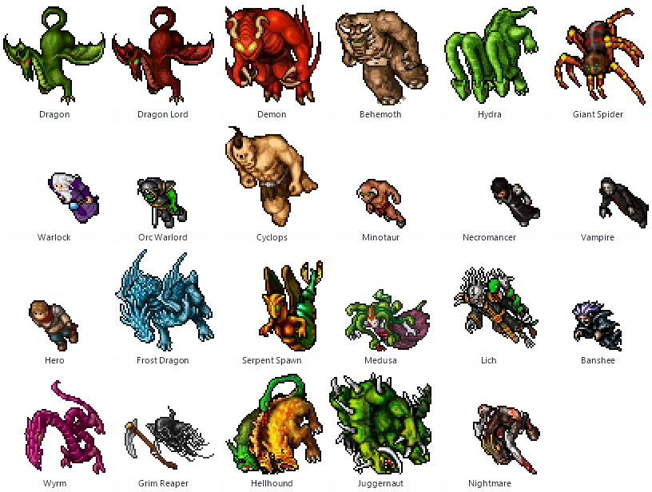
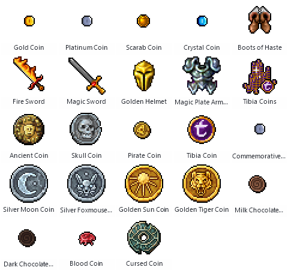

Redaktorzy wiki
Gotowy do wklejenia kod {{Infobox Object}}, poprawnie nazwane obrazy, animowane GIF-y, ID przedmiotów, dane stworzeń i domów oraz link do pliku dla każdego przesłanego obrazu.
Wszystko, co potrafi Tibia Foundry – z prawdziwymi zrzutami ekranu wersji 9.0.5 w Twoim języku.
Niezależnie od tego, czy prowadzisz wiki, fansite, stronę gildii czy kanał na YouTube, przy każdej aktualizacji klienta wracają te same obowiązki. Tibia Foundry wykona je za Ciebie.
Gotowy do wklejenia kod {{Infobox Object}}, poprawnie nazwane obrazy, animowane GIF-y, ID przedmiotów, dane stworzeń i domów oraz link do pliku dla każdego przesłanego obrazu.
Spójne galerie potworów, outfitów i przedmiotów, strony aktualizacji i paczki zasobów do pobrania – w formacie, którego używa Twoja strona.
Przezroczyste sprite'y, arkusze sprite'ów, grafiki interfejsu i powiększenia co do piksela (najbliższy sąsiad: bez rozmycia, bez nowych kolorów).
Obrazy map, obszary i pozycje NPC z danych mapy klienta, mapy w wysokiej rozdzielczości do poradników i obrazek każdego domu.
Dźwięki i muzyka z klienta, arkusze porównawcze do filmów i artykułów oraz metadane i informacje o autorach wszystkiego, co publikujesz.
Przeglądaj wszystkie obiekty, outfity, efekty, potwory i questy oficjalnego klienta i zachowuj każdą wersję klienta dla historii.
23 narzędzia pogrupowane według zadań, korzystające z jednego klienta, jednej biblioteki i jednego zestawu reguł eksportu.
Znajduje zainstalowane klienty serwera głównego i testowego, wczytuje foldery klienta z dowolnego miejsca i oszczędnie archiwizuje każdą wersję – sprawdzoną plik po pliku i możliwą do odtworzenia później.
Klienci · Odtwarzanie instalacji klienta · Zgodność
Przezroczyste sprite'y lub całe arkusze sprite'ów, wszystkie obiekty, outfity, efekty i pociski, dane potworów i questów oraz dźwięki i muzyka klienta.
Wyodrębnianie sprite'ów · Wyglądy · Dane statyczne · Dźwięki
Animowane GIF-y z ustawieniami dla fansite'ów, kolorowe outfity z addonami i mountami, animacje potworów oraz powiększenia co do piksela od 1× do 8×.
Wyglądy (Outfitter) · Narzędzia zaawansowane
Przeglądaj i edytuj kopię oficjalnych zasobów, wyciągaj i odbudowuj pliki zasobów Qt, zapisuj klasyczne kopie Tibia.dat/.spr i edytuj metadane plików.
Edytor zasobów · Edytor RCC · Konwerter klienta · Metadane plików
Obrazy map, obszary i pozycje NPC, mapy w wysokiej rozdzielczości do poradników oraz obrazki domów do każdego artykułu o domu.
Narzędzia map · Obrazy domów
Przeszukiwalna biblioteka wszystkich obrazków, animacji i dźwięków – kolekcje, tagi, wersje, wykrywanie duplikatów – z automatycznie dodawanym każdym eksportem.
Biblioteka zasobów
Projekty wielokrotnego użytku, które tworzą galerie potworów, outfitów i przedmiotów, zasoby aktualizacji i obrazki do wiki – skonfigurowane raz, uruchamiane ponownie przy każdej aktualizacji.
Studio treści
Setki obrazków za jednym razem, w kolejce w tle z postępem, anulowaniem i ponawianiem; skrypty do masowej zmiany nazw, rozmiaru i konwersji.
Kolejka „Studio treści” · Skrypty
Profile dla TibiaWiki, Twojego fansite'u, galerii, artykułów lub archiwum: rozmiary, formaty, nazwy, foldery, manifesty, informacje o autorach i fragmenty kodu.
Profile publikowania · Galerie HTML
Wybierz obiekt na stronie „Wyglądy” i otwórz Infobox wiki: Tibia Foundry tworzy {{Infobox Object}} TibiaWiki z oficjalnych danych klienta, zgodnie z parametrami szablonu i konwencjami wiki. Sprawdź go, dopisz to, co wiesz tylko ty, i wklej do artykułu.
Twoje sprite'y, GIF-y, rendery, mapy, dźwięki i grafiki w jednym przeszukiwalnym miejscu. Pliki zostają tam, gdzie są – biblioteka tylko je odczytuje.
Wybierz, co chcesz stworzyć, dostosuj kroki, wybierz profil swojej strony i uruchom. Tibia Foundry w tle renderuje, skaluje, nazywa, sortuje, opisuje i pakuje wszystko.
Wybierz potwory, outfity, przedmioty, kolekcję z biblioteki lub folder – z przeszukiwalnej listy zawartości klienta.
Skala, płótno, wyrównanie, animacja, addony, kolory, nazwy i foldery – albo zostaw domyślne ustawienia szablonu.
Kolejka pracuje w tle, a Ty dalej korzystasz z programu; każde zadanie możesz anulować lub ponowić.
Obrazki z wbudowaną informacją o autorze, arkusze kontaktowe, JSON/CSV/Markdown, galeria HTML i plik ZIP.



Każdy fansite, wiki i CMS chce obrazków w inny sposób. Każdy profil opisuje jedną stronę, więc nic nie jest wciskane w cudzy format. Wbudowane profile to punkty wyjścia, które możesz edytować.
| Profil | Obrazki | Nazwy i foldery | Dodatki |
|---|---|---|---|
| TibiaWiki | Rozmiar z klienta; PNG, animacje jako GIF | Nazwy z gry ze spacjami · {category} | Jeden link [[File:…]] na obrazek, JSON i CSV |
| Własny fansite | Rozmiar z klienta; PNG, animacje jako GIF | dragon-lord.gif · małe litery, łączniki | Fragment HTML <img> na obrazek, JSON i CSV |
| Strona z galerią | 2× na stałym płótnie 128×128 | Małe litery, podkreślenia | Samodzielna galeria HTML, JSON i CSV |
| Publikowanie artykułów | Rozmiar z klienta; PNG, animacje jako GIF | dragon-lord.gif · małe litery, łączniki | Markdown z informacją o autorze pod każdym obrazkiem |
| Archiwum osobiste | Oryginalny rozmiar | Nazwy z gry ze spacjami · {category} | Wszystkie formaty manifestu |
| Twój własny | Dowolna skala, płótno, margines, tło i format | Szablony z 22 zmiennymi | Twoja informacja o autorze i fragment kodu (wiki, HTML, BBCode…) |
Miniatury, widok w pełnym rozmiarze, kategorie, wyszukiwanie, metadane i autorzy, jasny i ciemny motyw – jeden plik index.html, który działa z dysku lub na dowolnym hostingu, bez serwera i bazy danych.
Listy JSON, CSV (bezpieczne dla arkuszy kalkulacyjnych) i Markdown wszystkich obrazków z nazwą, ID, kategorią, rozmiarem, wersją klienta i autorem – gotowe do importu w CMS.
Każdy plik PNG i GIF zawiera Twoje nazwisko jako twórcy oraz prawa autorskie CipSoft do grafiki. Pliki utworzone z cudzych obrazków zachowują ich pierwotnych twórców.
Wykonane w programie z zainstalowanym oficjalnym klientem – wyświetlane w motywie, w którym oglądasz tę stronę. Kliknij dowolny zrzut, aby go powiększyć.
Foldery klienta są tylko odczytywane. Edytory zapisują kopie w innym miejscu, a żadne narzędzie nie zapisuje niczego w folderze klienta ani archiwum.
Eksporty są zapisywane w miejscu tymczasowym i przenoszone na miejsce dopiero po ukończeniu; zastępowane pliki można zarchiwizować i przywrócić.
Bez konta, bez chmury. TibiaWiki jest odpytywana tylko przez funkcje, które tego potrzebują. Raporty diagnostyczne pomijają osobiste ścieżki, więc można je bezpiecznie udostępniać.